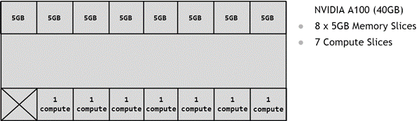

Nvidia MIG
last updated 2026-06-11
What is MIG
MIG stands for “Multiple Instance GPU”, and it allows you to virtualize a single physical GPU into multiple logical GPUs. For instance, an H100 has 7 SM groups and 8 memory groups (each 10GB), so you can split it into up to 7 logical GPUs, each of which has 1-2 memory groups.

How to use MIG
Enabling MIG:
sudo nvidia-smi -i <GPU IDs> -mig 1
List MIG Profiles:
sudo nvidia-smi mig -lgip
+-------------------------------------------------------------------------------+
| GPU instance profiles: |
| GPU Name ID Instances Memory P2P SM DEC ENC |
| Free/Total GiB CE JPEG OFA |
|===============================================================================|
| 0 MIG 1g.10gb 19 7/7 9.75 No 16 1 0 |
| 1 1 0 |
+-------------------------------------------------------------------------------+
| 0 MIG 1g.10gb+me 20 1/1 9.75 No 16 1 0 |
| 1 1 1 |
+-------------------------------------------------------------------------------+
| 0 MIG 1g.20gb 15 4/4 19.62 No 26 1 0 |
| 1 1 0 |
+-------------------------------------------------------------------------------+
| 0 MIG 2g.20gb 14 3/3 19.62 No 32 2 0 |
| 2 2 0 |
+-------------------------------------------------------------------------------+
| 0 MIG 3g.40gb 9 2/2 39.50 No 60 3 0 |
| 3 3 0 |
+-------------------------------------------------------------------------------+
| 0 MIG 4g.40gb 5 1/1 39.50 No 64 4 0 |
| 4 4 0 |
+-------------------------------------------------------------------------------+
| 0 MIG 7g.80gb 0 1/1 79.25 No 132 7 0 |
| 8 7 1 |
+-------------------------------------------------------------------------------+
Creating a MIG instance:
To create a MIG instance, look at the available profiles for your GPU, and reference its id/name. For instance, if you want 2 logical GPUs with 3 compute nodes in each and 40gb, you’d use 9:
sudo nvidia-smi mig -cgi 9
Resetting your GPUs:
sudo nvidia-smi mig -i <GPU_IDS> -dgi
Support
Only datacenter and workstation GPUs, sadly. So, not on 3090’s or 5090’s, but you can do it with RTX PRO 6000 Blackwells (and H100’s, A100’s, etc). There’s no support for the RTX PRO 4000, but the 4500-6000 are all supported.
Supported generations start at Ampere GPUs (A100, A30) and continue through Hopper, Blackwell, etc. Datacenter GPUs have 7 logical GPUs, whereas the Blackwell PRO workstation GPUs can either be 2 (4500, 5000) or 4 (PRO 6000).